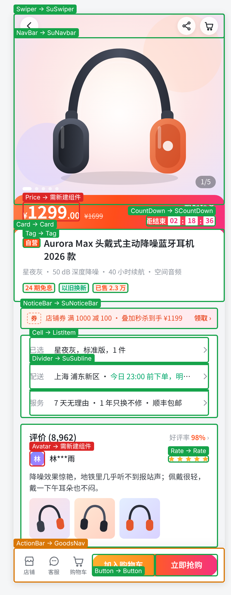
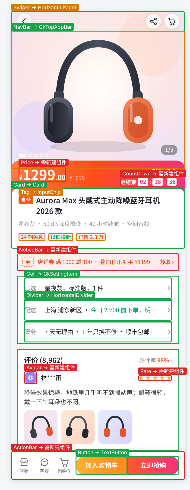
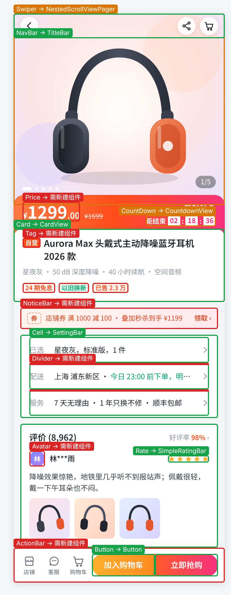
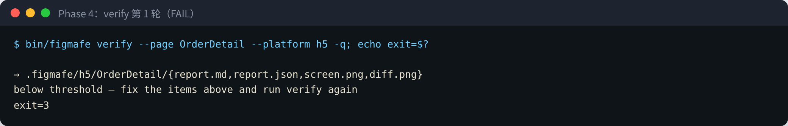
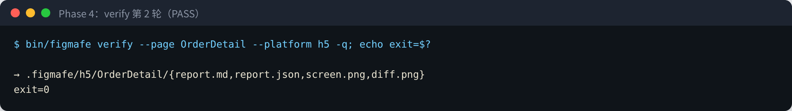

验证报告 · 痛点 4「Figma 到实现存在偏差，组件未被充分复用」
Figma → 代码：存量项目的组件复用
仓库 luckylucky0001/figma-fe · 2026-10-20 · 交付物：CLI figmafe（Go）、Skill figma-to-code、免费的 Figma 导出插件、demo、分步教程、演示 deck、本报告
873/910
复用推荐正确，0 处错误
26
个真实开源项目，H5 / Android 主流技术栈
0/11 → 11/12
Agent 实现新页面通过复用检查（不用 → 用 Skill）
结论
- 先把「项目里有什么」查清楚，才知道新设计稿能复用什么。
figmafe reuse 扫一遍现有项目，得到组件资产、项目惯例、重复实现，以及「组件库里有、但本项目用不了」的组件；figmafe match 再把设计稿逐个元素对上去，给出直接复用 / 需确认 / 需新建，附项目里的真实写法和 props 配置。
- 推荐准不准：26 个项目、4 份设计稿共 910 项，✓873 / △37 / ✗0。其中 21 个项目是留出的：调规则时没用过，第一次跑出过错（含三个大型系统：芋道商城、gkd、AndroidProject），修的都是通用规则（第 4、5 节）。
- Agent 用不用 Skill 差别很大：5 个真实项目里按同一份设计稿实现新页面，不用 Skill 0/11 通过复用检查，用 Skill 11/12；代价是多 35% token、45% 耗时（第 8 节）。
- 真的跑得起来：在 vue-h5-template 里 Agent 按 Skill 做出新页面，复用门禁、类型检查、构建、单测都通过；像素对比因为项目主题和设计稿不同没过，这正是存量项目要处理的事（第 8 节）。
- 只用免费能力：不用 Code Connect、Dev Mode MCP、Variables REST API；设计数据由自己写的插件（Plugin API）导出。
右图是本报告的演示设计稿（第 3 节）：一张完成度较高的商品详情页，含主图轮播、秒杀价格、规格配送、评价、底部购买栏。没有真实 Figma 文件可用，它和另外三份设计稿一样由手写的设计源导出成插件格式（局限见第 9 节）。
交付物
| 交付物 | 位置 | 说明 |
|---|
CLI figmafe（Go） | cli/，构建到 bin/figmafe | reuse 体检、match 复用清单、compare / verify 截图与门禁，单二进制，无外部依赖 |
Skill figma-to-code | .claude/skills/figma-to-code/ | 固定 Agent 的流程：体检 → 复用清单 → 人确认 → 实现 → 检查到通过 |
| Figma 导出插件 | figma-plugin/ | 只用免费的 Plugin API，导出节点树、组件集、变体和 @2x 图 |
| Demo | h5/、android/、design/ | H5（React）与 Android（Compose / XML）组件库、四份设计稿（含精修的商品详情页） |
| 教程、报告、deck | docs/tutorial/、docs/report.pdf | 分步教程带截图；本报告；5 页演示 deck |
| 实验数据 | experiments/、docs/real-test/ | 26 个项目的回归评测、Agent A / C 实验、三个大型系统的完整输出 |
1. 问题和方案
新页面从 Figma 落到代码时，偏差主要不在像素，而在没用上项目已有的组件：Agent 或新人看不到项目里有什么，就照着设计稿重写一套导航栏、卡片、按钮，再写死颜色。项目越大越严重，而大项目恰恰最需要复用。所以方案的核心是先盘点存量，再对设计稿：
① 体检存量reuse：组件资产、项目惯例、重复概念、复制粘贴结构、写死颜色、版本 / 主题兼容性
② 复用清单match：设计稿元素 → 项目组件，附真实用法、props 配置、可视化叠图
③ 人确认「需确认 / 需新建」写进 component-map.yaml，下次自动采用
④ 写完检查reuse --focus / --changed：自造轮子、有组件没用、手写已有组件
⑤ 对照设计compare / verify：截图、像素与节点级偏差，带 Figma 节点 id
⑥ 不许变差--baseline --no-regress 接 CI；经验沉淀进 rules.md
| Proposal 要求 | 落地方式 |
|---|
| Figma 组件与代码组件的对应关系 | match 按名字、UI 概念（中英文同义词）、项目前缀、使用次数、设计系统封装、主用组件库等打分；人确认后写进 component-map.yaml，之后优先采用确认过的映射 |
| 开发前识别可复用组件 | 先 reuse 再 match：只推荐本项目真能用的组件（检查组件库版本、改名 / 移除、主题依赖、废弃 API、是否被设计系统封装）；没有组件但有固定写法时推荐「项目惯例」 |
| 开发后检查用了哪些组件、和 Figma 截图对比 | reuse --focus <页面> 或 --changed <git ref> 只看新增代码；compare 截图对比；demo 里 verify 把两者合成一个门禁 |
| 偏差反馈给 Agent、沉淀规则 | 每条问题带文件行号或 Figma 节点 id 和修改建议，Skill 规定照着改到通过；决定和理由写进 component-map，经验写进 rules.md |
Skill 把流程固定下来
figma-to-code Skill 规定 Agent 的顺序：先体检，再出复用清单并等人确认，再实现，最后跑页面检查和截图对比直到通过，不允许跳过前两步直接写页面。第 8 节的实验说明这个顺序比模型本身更重要：同样的模型，按 Skill 走和不按 Skill 走，复用检查通过率是 11/12 对 0/11。
支持的技术栈
| 平台 | 框架 | 组件库 / 设计系统 |
|---|
| H5 | Vue 2 / 3、React、uni-app、Taro | Vant 2 / 4、React Vant、NutUI、antd-mobile、uni-ui、uView、wot-design-uni、taro-ui、TDesign、Element Plus，以及项目自有组件 |
| Android | XML View（含 DataBinding）、Jetpack Compose（含 Multiplatform） | Material Components / Material3、AppCompat、QMUI、三方 View 库（按包名识别），以及项目自有设计系统 |
只用免费能力：Figma 的 Code Connect、Dev Mode MCP 和 Variables REST API 都要付费，这里一个都不用。设计数据由自己写的 Figma 插件导出（Plugin API 免费），格式见 docs/CONTRACTS.md。
2. 工具做了什么
2.1 体检：组件库有，不等于本项目能用
figmafe reuse <仓库> 只读扫描，输出：
- 组件资产：组件库组件、设计系统、业务组件、自定义 View / Composable，每个都带使用次数和项目里的真实写法
- 主用组件库：装了多套 H5 组件库时，按
.env 里的 UI 配置项或使用次数定一套，新页面不许混用
- 兼容性：组件库版本里没有的组件、主题不支持会崩溃的组件、已废弃的 API、被设计系统封装过的库组件
- 项目惯例：没有组件但固定这么写的结构（如 1px 细线 View）
- 重复概念、复制粘贴结构、写死颜色（含已有同值 token 的），按影响面排出「优先处理」

QMUI_Android 用 AppCompat 主题和 Material 1.4：列出的组件会崩溃或编译失败，match 不会推荐。
2.2 复用清单：依据是项目自己的用法
figmafe match --figma <导出目录> <仓库> 对设计稿里每个组件实例或未组件化的图层打分，信号包括：
| 信号 | 例子 |
|---|
| 名字与 UI 概念 | NavBar / TitleBar / TopAppBar 同为导航栏；中文图层「持仓列表项」→ 列表项；ProductCard → Card 算匹配，MaterialRadioButton 不算 Button |
| 项目用得多、设计系统优先 | 芋道的 SuNavbar（设计系统）优先于 uni-ui NavBar；gkd 的 TextButton（72 处）优先于 Button（3 处） |
| 专门用途降权 | 名字或文档注释写明一种用途的组件（PasswordInputView、GkIconButton、注释为「验证码倒计时」的 CountdownView）不当通用组件 |
| 按用法认概念 | 调用处都在传搜索词的输入组件是搜索框；含 <router-view> 的组件是页面外壳 |
| 变体 → props | Tone=Warning → type="warning"；尺寸按设计稿高度选（32px 的 Medium 按钮 → Vant size="small"） |
2.3 写完检查：有现成组件却手写
不用 Skill 的实现（newbee，A 组）：分割线、商品卡、底部操作栏都是手写的，每条带行号和应复用的组件。--changed origin/main 只检查新增代码，存量问题不挡提交；--baseline --no-regress 让组件化率、写死颜色等指标只许变好。
3. 演示：同一张设计稿，三个大型系统各自的复用清单
同一张商品详情设计稿，放到三个技术栈完全不同的系统里，推荐的是各自项目里的组件：芋道用自己的 SuSwiper / SuNavbar 和 uni-ui Rate，gkd 用 GkTopAppBar / GkSettingItem 和 Compose 的 HorizontalPager，AndroidProject 用 TitleBar / SettingBar 和自己的 SimpleRatingBar。绿框直接复用、橙框需确认、红框需新建。
设计稿（商品详情）

芋道商城（H5 · uni-app）
直接复用 10 · 需确认 1 · 需新建 2
gkd（Android · Compose Multiplatform）
直接复用 5 · 需确认 2 · 需新建 6
AndroidProject（Android · XML View）
直接复用 5 · 需确认 2 · 需新建 6
| 设计稿元素 | 芋道商城 | gkd | AndroidProject |
|---|
| Swiper | SuSwiper | HorizontalPager | NestedScrollViewPager |
| NavBar | SuNavbar | GkTopAppBar | TitleBar |
| Price | 需新建 | 需新建 | 需新建 |
| CountDown | SCountDown | 需新建 | CountdownView |
| Card | Card | Card | CardView |
| Tag | Tag | InputChip | 需新建 |
| NoticeBar | SuNoticeBar | 需新建 | 需新建 |
| Cell | ListItem | GkSettingItem | SettingBar |
| Divider | SuSubline | HorizontalDivider | 需新建 |
| Avatar | 需新建 | 需新建 | 需新建 |
| Rate | Rate | 需新建 | SimpleRatingBar |
| ActionBar | GoodsNav | 需新建 | 需新建 |
| Button | Button | TextButton | Button |
设计稿源文件 design/showcase/source/product-detail.html，导出 design/showcase/figma-export/product-detail/；三个系统的完整输出在 docs/real-test/large/<系统>/showcase/。
4. 推荐准不准：26 个真实开源项目
方法：每个项目固定 commit，可复现；先逐条写好标准答案（✓ 正确、△ 可用但不是最优、✗ 错误，「—」表示应该新建），再跑工具对答案。前三份设计稿覆盖组件化 / 未组件化、中文 / 英文图层和新概念，在全部 26 个项目上判分；第四份精修稿（商品详情）在 4 个项目上判分。留出项目是调规则时没用过的，第一次跑的结果见第 5 节。
| 项目 | 订单详情 | 我的持仓 | 买入下单 | 商品详情 |
|---|
| newbee | ✓11 | ✓12 | ✓10 | — |
| qmui | ✓11 | ✓12 | ✓8 △2 | — |
| nia | ✓11 | ✓12 | ✓9 △1 | — |
| antdm-template | ✓11 | ✓12 | ✓10 | — |
| antdm-mobile | ✓11 | ✓12 | ✓10 | — |
| jetsnack 留出 | ✓10 △1 | ✓11 △1 | ✓10 | — |
| litemall 留出 | ✓11 | ✓12 | ✓10 | — |
| hello-uniapp 留出 | ✓11 | ✓12 | ✓9 △1 | — |
| taro-ui-demo 留出 | ✓11 | ✓12 | ✓10 | — |
| nutui-vite 留出 | ✓11 | ✓12 | ✓10 | — |
| sunflower 留出 | ✓10 △1 | ✓11 △1 | ✓10 | — |
| pokedex 留出 | ✓11 | ✓12 | ✓10 | — |
| newpipe 留出 | ✓10 △1 | ✓11 △1 | ✓8 △2 | — |
| 项目 | 订单详情 | 我的持仓 | 买入下单 | 商品详情 |
|---|
| vant-demo-vue3 留出 | ✓11 | ✓12 | ✓10 | — |
| vant-demo-vue2 留出 | ✓11 | ✓12 | ✓10 | — |
| vue3-vant-mobile 留出 | ✓11 | ✓12 | ✓10 | — |
| mall-app-web 留出 | ✓10 △1 | ✓12 | ✓10 | — |
| antennapod 留出 | ✓10 △1 | ✓11 △1 | ✓9 △1 | — |
| wanandroid 留出 | ✓11 | ✓12 | ✓10 | — |
| seal 留出 | ✓10 △1 | ✓11 △1 | ✓9 △1 | — |
| kunminx 留出 | ✓10 △1 | ✓11 △1 | ✓7 △3 | — |
| jeecg-uniapp 留出 | ✓11 | ✓12 | ✓10 | — |
| vue-h5-template 留出 | ✓10 △1 | ✓12 | ✓10 | ✓11 △2 |
| yudao-mall 留出 | ✓10 △1 | ✓11 △1 | ✓10 | ✓12 △1 |
| gkd 留出 | ✓10 △1 | ✓11 △1 | ✓10 | ✓12 △1 |
| androidproject 留出 | ✓10 △1 | ✓11 △1 | ✓10 | ✓11 △2 |
合计 ✓873 / △37 / ✗0（910 项）。△ 多数是工具给了「需确认」、由人决定的情况，例如项目里没有标签组件时推荐组件库的 Chip，或只有别的组件库里有的 Price。
技术栈：Vue 2 / 3、React、uni-app、Taro × Vant / NutUI / antd-mobile / uni-ui / taro-ui / wot-design-uni / 自有组件；Android XML / Compose × QMUI / Material / AppCompat / 三方 View 库 / 自有设计系统。逐项结果见 experiments/real-match-eval.md，每一条的判断理由见 match-judgement.md。回归：python3 experiments/real-match-eval.py。
5. 边测边改：第一次跑的错误和通用修正
每加一批项目，先按写好的答案跑一次、如实记录错误，再改成通用规则（没有针对单个项目的特判），最后对全部项目回归，并重算真实项目实验的打分（experiments/rescore-real.sh）。
| 批次 / 项目 | 第一次跑 | 出错原因 → 通用修正 |
|---|
| Jetsnack | 3 ✗ | 桌面小部件（Glance）组件被当成 App 组件；没认出 Jetsnack* 项目前缀 → 识别 Glance、学习项目前缀、ui/components 算设计系统 |
| litemall | 2 ✗ | 推荐了 Vant 3 才有的 ActionBar，项目是 Vant 2 → 组件库加入改名 / 移除信息，按实际安装版本过滤 |
| hello-uniapp | 12 ✗ | uni-app 内置小写标签被当成项目组件、中文图层名规范化后为空被判「同名」→ 加 uni-ui 目录，修空名误判 |
| NewPipe | 3 ✗ | AppCompat 标准控件没算进项目资产，XML 页面被推荐 Compose 组件 → 跨技术栈的候选最多「需确认」 |
| mall-app-web / AntennaPod | 崩溃 / 1 ✗ | uni-app 内置标签没有 import 路径导致崩溃；AntennaPod 的空状态封装 EmptyViewHandler 不是 View → 修崩溃、识别「界面封装类」 |
| WanAndroid / Seal / KunMinX / jeecg | 11 / 7 / 3 / 11 ✗ | 三方 View 库和 wot-design-uni 没被收录；Android 的 ActionBar 是顶栏；PasswordInputView / ConfirmButton 这类专门用途组件被当成通用组件；会崩溃的组件没有别的候选时仍排第一 |
| 买入下单（第三份设计稿，14 个项目） | 12 ✗ | 开关 / 复选框 / 单选原来是一个概念，搜索算在输入框里 → 拆开概念、补词表 |
| vue-h5-template | 23 ✗ | 同时装了 Vant / NutUI / Varlet，打平后一半推荐 NutUI，同一页面混用 → 先定「主用组件库」（看 .env）；演示页被当成设计系统 → 目录按最外层分类 |
| 芋道 / gkd / AndroidProject | 崩溃 / 5 / 8 ✗ | props 三元默认值让扫描崩溃；图标按钮当文字按钮；54 个 AppCompatButton 漏数；「验证码倒计时」被当成倒计时（详见第 6、7 节） |
| 商品详情（精修稿，4 个项目） | 3 ✗ | 提示卡片 GkMatchingBanner 因为名字含 banner 被当成轮播；评分控件、头像没有概念 → 新增 rate / avatar 概念，没有图片参数的 banner 不算轮播 |
准确率随项目增加的变化
| 阶段 | 项目 | 结果 | 这一阶段新增的通用规则（举例） |
|---|
| 报告初版 | 22 | ✓699 △27 ✗0 | 版本 / 主题兼容性、项目惯例、设计系统封装 |
| + vue-h5-template | 23 | ✓734 △25 ✗0 | 主用组件库；只有依赖里的包才算三方库 |
| + 三个大型系统 | 26 | ✓826 △32 ✗0 | 读组件文档注释；AppCompat* 算平台控件；建立在其他组件之上的算特化 |
| + 实现反馈 | 26 | ✓827 △31 ✗0 | 按设计稿高度选尺寸；按调用处认出搜索框 |
| + 精修演示稿 | 26 | ✓873 △37 ✗0 | 评分、头像概念；没有内容参数的 banner 不是轮播 |
vant-demo、Pokedex、Sunflower、vue3-vant-mobile 第一次跑就没有 ✗。真实项目实验的打分在这几轮修改中都没有变化。
6. 大型系统：H5
前面的项目多是模板和示例，所以又挑了三个规模大、写法杂的生产系统，按 Skill 的顺序分析：体检 → 复用清单 → 人工逐条判断 → 出错的改成通用规则 → 全量回归。答案在跑当前版本之前写好，「第一次跑」是修正前的版本。
芋道商城 yudao-mall-uniapp（H5 · uni-app） commit 4924ad51 · 四份设计稿 ✓43 △3 ✗0
uni-app 商城前端：自有设计系统 sheep/ui（su-*）、业务组件 sheep/components（s-*），另装 uni-ui
307 个文件
122 个组件资产
99% 组件化率
11 个重复概念
组件库用量：uni-app 内置组件 374 次、uni-ui 128 次；设计系统封装：Swiper → SuSwiper
体检优先处理
- 628 处写死的颜色已有同值 token，可以直接替换（见第 6 节）
- 「button」有 2 种实现（共用 187 次）→ 统一到
Button - 「goods」有 3 种实现（共用 50 次）→ 统一到
SGoodsColumn
精修稿复用清单（直接复用 10 · 需确认 1 · 需新建 2）
| 设计稿元素 | 结论 | 推荐 | 依据 |
|---|
| Swiper | 直接复用 | SuSwiper | 同名，项目里已用 5 次，设计系统组件 |
| NavBar | 直接复用 | SuNavbar | 同名，项目里已用 1 次，设计系统组件 |
| Price | 需新建 | — | 项目和组件库里都没有 |
| CountDown | 直接复用 | SCountDown | 同名，项目里已用 1 次 |
| Card | 直接复用 | Card | 同名 |
| Tag | 直接复用 | Tag | 同名，项目里已用 1 次 |
| NoticeBar | 直接复用 | SuNoticeBar | 同名，变体轴匹配 1/1，项目里已用 1 次，设计系统组件 |
| Cell | 直接复用 | ListItem | 同为 cell，标准组件，项目里已用 6 次 |
| Divider | 直接复用 | SuSubline | 同为 divider，项目里已用 1 次，设计系统组件 |
| Avatar | 需新建 | — | 项目和组件库里都没有 |
| Rate | 直接复用 | Rate | 同名，项目里已用 3 次 |
| ActionBar | 需确认 | GoodsNav | 同为 actionbar，标准组件 |
| Button | 直接复用 | Button | 同名，项目里已用 186 次 |
第一次跑（修正前）：三份设计稿全部崩溃；精修稿 12 ✓ / 1 △。出错的地方 → 通用修正
- Vue props 里
a ? b : c 形式的默认值让 props 解析越界 → 冒号前必须有键名 - su-image 被当成
<image> 的封装，但项目直接写 <image> 71 次、su-image 4 次 → 封装组件用得不到原生一半时不算封装 - 同一颜色有多个 token 时随手挑了一个 → 选项目里引用最多的 token
- 卡片推荐了 SLiveCard（直播卡片）、资产卡片推荐了 SWalletCard → live / coupon / groupon / wallet 等商城领域词算专门用途；分割线别名加 subline（项目的分割线是 su-subline）
- 体检把装修组件 s-notice-block（只是包了一层 su-notice-bar）算成第二种实现 → 记录组件模板里用到的组件，建立在同概念组件之上的算特化
还剩的问题：商品页底部操作栏 detail-tabbar.vue（4 个商品页在用）的按钮从插槽传入，文件本身看不出是操作栏，工具给的是 uni-ui GoodsNav（需确认）。
7. 大型系统：Android（Compose 与 XML）
gkd（Android · Compose Multiplatform） commit b2b42f28 · 四份设计稿 ✓43 △3 ✗0
Jetpack Compose + Material3，自有 ui/component（GkTopAppBar、GkSettingItem、GkSwitch …）
839 个文件
175 个组件资产
100% 组件化率
4 个重复概念
组件库用量：Compose Material3 174 次、Compose Foundation 20 次；设计系统封装：Checkbox → GkCheckbox、FloatingActionButton → GkAnimatedFloatingActionButton、ModalBottomSheet → GkModalBottomSheet、Switch → GkSwitch、TextField → GkMultiTextField、TopAppBar → GkTopAppBar
体检优先处理
- 「dialog（Compose）」有 3 种实现（共用 36 次）→ 统一到
GkDialog - 「card（Compose）」有 4 种实现（共用 30 次）→ 统一到
Card - 「input（Compose）」有 3 种实现（共用 18 次）→ 统一到
GkMultiTextField
第一次跑（修正前）：三份设计稿 5 ✗；精修稿 1 ✗。出错的地方 → 通用修正
- 根目录只装了 husky 的
package.json，自动识别平台时被当成 H5 项目 → 依赖里有前端框架才算 H5 - 按钮推荐了 GkIconButton（图标按钮 71 处），文字按钮其实是 TextButton（72 处）→ icon 算专门用途词
- 搜索框是顶栏里的 GkAppBarTextField，名字里没有 search → 调用处大多绑定搜索词（
value = searchStr）的输入组件按用法认作搜索框 - 主图轮播推荐了 GkMatchingBanner（「开启匹配」的提示卡片）→ 没有图片 / 列表 / 页数参数的 banner 不算轮播
- 体检「button 有 11 种实现」「dialog 有 15 种实现」「GkTwoLineText 是分割线」；RadioButton 被判成被 GkMenuItemRadioButton 封装 → 专门用途 / 弱词组件不算重复，按函数体记录「建立在谁之上」，封装组件 = 库组件名前加前缀和一个词
还剩的问题：涨跌标签推荐了 M3 InputChip（需确认）：项目里没有标签组件，严格说应新建。
AndroidProject（Android · XML View） commit cdf35d36 · 四份设计稿 ✓42 △4 ✗0
XML 骨架（国内很多 App 用它起步）：TitleBar 三方库 + 自有 customWidget 库（SettingBar、SwitchButton、SimpleRatingBar …）
198 个文件
41 个组件资产
100% 组件化率
0 个重复概念
组件库用量：Android SDK widgets 103 次、com.hjq.bar 13 次、com.hjq.shape 5 次、Material Components 1 次、com.airbnb.lottie 1 次、com.hjq.nested 1 次、me.relex.circleindicator 1 次
体检优先处理
- 5 处写死的颜色已有同值 token，可以直接替换（见第 6 节）
- 23 个元素的结构被复制了 2 次（app/src/main/res/layout/dialog_activity.xml:2 等）→ 抽成组件
- 1 处原生 Toolbar：项目里已有 TitleBar（组件库）
第一次跑（修正前）：三份设计稿 8 ✗；精修稿 2 ✗。出错的地方 → 通用修正
- 布局里 54 个
AppCompatButton 没算成平台 Button，推荐了只用过 1 次的 SubmitButton → AppCompat* 计入对应的平台控件 - 设置行 SettingBar、状态布局 StatusLayout、评分 SimpleRatingBar 没被认出 → 补概念词，新增 rate / avatar 概念
- CountdownView 的注释写着「验证码倒计时」，是发送验证码的按钮 → 读组件声明前的文档注释，写明专门用途的降权，结论最多「需确认」
- 头像推荐了 ScaleImageView（长按缩放的图片）→ 头像是独立概念，没有就判需新建
还剩的问题：支付倒计时其实要新建：工具给「需确认 CountdownView（专门用途：验证码）」，由人来否掉。
8. 实现：Agent 照着清单写页面
8.1 vue-h5-template：装依赖、类型检查、构建、像素对比都跑了
① 体检装了 Vant / NutUI / Varlet，.env 里 VITE_UI_FRAMEWORK=vant → 主用 Vant
② 复用清单第一次 10 ✓ / 23 ✗（混用两套组件库）→ 修正后 32 ✓ / 1 △
③ 实现src/views/order/detail.vue + 新建 PriceText.vue，理由写进 component-map
④ 验收复用门禁 · vue-tsc · vite build · 50 个单测，全部通过
像素对比 7.11%，没通过：项目主题（靛蓝主色、44px 按钮、字体）和设计稿不同。组件复用对了，样式还要对齐项目的主题 token。Agent 反馈的工具问题都已修：尺寸按设计稿高度选（32px 的 Medium 按钮 → size="small"，而不是按名字对到 44px 的 normal）；含 <router-view> 的 Layout 不再当成操作栏；CellGroup 的 title 显示在卡片外这一点写进了提示。
8.2 用不用 Skill：5 个真实项目的 A / C 对照
同一份设计稿（订单详情）。A 组只给任务和 Figma 导出，C 组加上 Skill。所有 run 用同一版 figmafe reuse --focus / --changed 打分：自造已有组件、有组件没用、手写已有组件，任何一项都算不通过。
| 项目 | 技术栈 | A 不用 Skill（Opus / Haiku） | C 用 Skill（Opus / Haiku） |
|---|
| 通过 | 复用组件数 | 问题数 | 通过 | 复用组件数 | 问题数 |
|---|
| newbee-mall | Vue 3 + Vant | 0/3 | 6 / 6 / 0 | 4 / 4 / 14 | 3/3 | 12 / 12 / 10 | 0 / 0 / 0 |
| litemall（留出） | Vue 2 + Vant 2 | 0/1 | 1 | 14 | 2/2 | 10 / 9 | 0 / 0 |
| QMUI_Android | XML + QMUI | 0/3 | 8 / 9 / 6 | 1 / 1 / 1 | 3/3 | 9 / 8 / 8 | 0 / 0 / 0 |
| NewPipe（留出） | XML + AppCompat | 0/1 | 3 | 2 | 1/1 | 6 | 0 |
| Now in Android | Compose + 自有设计系统 | 0/3 | 2 / 2 / 1 | 6 / 6 / 2 | 2/3 | 7 / 8 / 8 | 2 / 0 / 0 |
| 合计 | 0/11 | 平均 4.0 | 共 55 | 11/12 | 平均 8.9 | 共 2 |
|---|
- Now in Android：A 组没先查已有组件，新建了 NiaNavBar / NiaCard / NiaDivider / NiaCell 等，和已有的 NiaTopAppBar / Card / HorizontalDivider / ListItem 重复，还写了一套 18 个写死颜色的主题。C 组复用了它们，新建的组件都写了理由。
- Haiku：从 0/4 提到 4/4，模型越弱，固定流程的收益越大。
- 成本：有用量记录的 4 次 A、10 次 C，C 平均多 35% token、45% 时间，多花在体检、复用清单、页面检查和写决定上。
9. 新页面闭环、局限和接入
9.1 demo 仓库：一条命令做门禁
自建的 H5（React）和 Android（Compose，兼容 compileSdk 32 / minSdk 23，另有 XML View 存量组件）组件库加一份订单详情设计稿，跑了 13 次 A / C 对照。figmafe verify 一条命令输出复用率、违规、像素差异和节点级偏差，退出码可做 CI 门禁，能区分「页面写错」和「组件本身不符合设计」（docs/component-issues.md）；教程第 8 步故意写错 3 处，全部被抓出。这个仓库小、组件好找，A 组复用率也是 100%，证明不了复用率提升；差别在规范：A 组 7/8 次自造了设计稿外的 CountDown，C 组 0/5。

教程里故意写错的版本：每条问题带 Figma 节点 id 和修改建议。

照着改完，verify 通过。
9.2 局限（如实说明）
- 没有真实 Figma 文件：本环境访问不了 Figma，四份设计稿都由手写的设计源导出成插件格式；插件只用模拟的 Plugin API 测过，没在真实 Figma 里跑过。
- 大多没有编译：除了 vue-h5-template，Agent 实验只做静态检查，没有构建和运行这些开源项目（本环境装不了 Android SDK）；demo 的 Android 截图用 Compose Desktop 渲染，不是真机。
- 实验有泄漏：A 组 agent 也能看到本仓库的 Skill，1 次 A run 自己跑了 figmafe，已剔除；泄漏只会让 A 组更好，所以 A / C 差距是保守估计。样本量小（每格 1～2 次），只能说明方向。
- 评分标准是人定的：✓ / △ / ✗ 由我逐条判断并写成回归用例，真实接入时应由组件 owner 复核一次。
- 只看静态代码：用途只能从插槽或运行时看出的组件（芋道的 detail-tabbar）认不出；组件库尺寸表目前只收录了 Vant / NutUI 的按钮。
9.3 接入你们的项目
| # | 动作 | 产出 |
|---|
| 1 | figmafe reuse <H5 / Android 仓库>（只读，不改代码） | 资产清单、优先处理项、首份体检基线 |
| 2 | Figma 插件导出下一个要做的页面，figmafe match | 复用清单 + 叠图，组件 owner 确认「需确认」项 |
| 3 | 开发时让 Agent 按 Skill 走；提交前 reuse --changed origin/main | 新增代码的复用问题，带行号 |
| 4 | CI 里 reuse --baseline main.json --no-regress（示例：docs/ci/） | 组件化率、写死颜色等指标只许变好 |